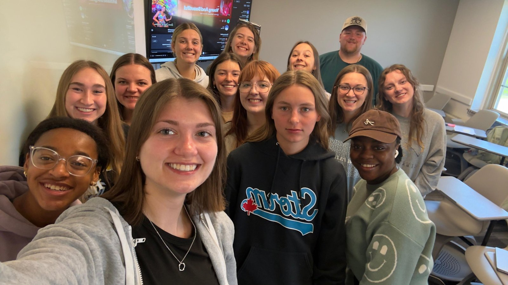

Teaching
Learning happens through interaction
I teach college writing and English to multilingual learners in the United States and Nigeria, using real tasks, real conversation, and technology that brings students together.

My Teaching Philosophy
I used to believe a good teacher stands at the center of the classroom and controls everything. Teaching language learners in Iowa, and now in Texas, changed that. Today I see my classroom as a place where students learn by interacting, doing, and communicating, and where technology carries that interaction beyond the classroom walls.
I teach through tasks and real communication. Students role-play, discuss, solve problems in groups, and share missing information with each other, using language to get something real done. My role is to guide: I set a clear purpose, listen in, give feedback, and talk through the task afterward. I also add short, focused grammar moments, so students grow in both fluency and accuracy. Wherever I can, I shape tasks around the languages and identities my students already bring.
I use technology for connection, not novelty. Co-writing a document, discussing in an online forum, or annotating a text together turns students from viewers into creators. I see AI as a helpful brainstorming tool when students use it openly and critically, but I make sure it never replaces their own thinking. For every tool, I ask one question: does it get learners talking and working out meaning together?
My goal is a classroom where students take initiative, make choices, and leave as more confident communicators.
Read my full teaching philosophy →


Courses I've Taught
ENGL 1301: College Reading and Writing
Two sections of first-year college studentsStudents learn to read closely and write with purpose through rhetorical analysis, literacy narratives, and discourse analysis, with peer review and revision built into every paper.
TESOL 2015: Language Today
Undergraduate students, including future teachersA course on language, identity, and digital communication, where students explore slang, memes, emojis, and language change through debates, infographics, and poster projects.
Adult ESL: Academic Writing, Speaking, and Workplace English
Adult English learnersStudents practiced real-life writing and speaking, such as workplace emails and academic tasks, through hands-on, task-based lessons.
Volunteer ESL Instructor: Academic Writing and Speaking
Multilingual college learnersOne-on-one and small-group support with planning, drafting, and revising essays, plus academic reading and speaking.
College English and Composition
Undergraduate studentsSupported teaching in introductory English and English composition, giving feedback on essays and building students' academic reading and writing.
English Language and Literature
Secondary school studentsTaught English language and literature.
What Students Say
“As much as I normally dislike group discussions, they have been used very effectively.”
“I enjoy how we do discussions and activities because it helps me focus. I think it can be easy to get distracted during lectures and I like to actually be involved.”
“I like doing the online discussions. I have to do a small amount of research for the answers, and then it is nice to see what other people have to say on the same topics.”
“I enjoy our class discussions. I think they can be inviting and fun.”
Classroom Observation
In October 2025, Dr. Hilal Ergül of the University of Northern Iowa observed my TESOL 2015: Language Today class. The lesson focused on informal writing and how the internet has changed the way we use language, mixing short presentations with group discussion and whole-class sharing.